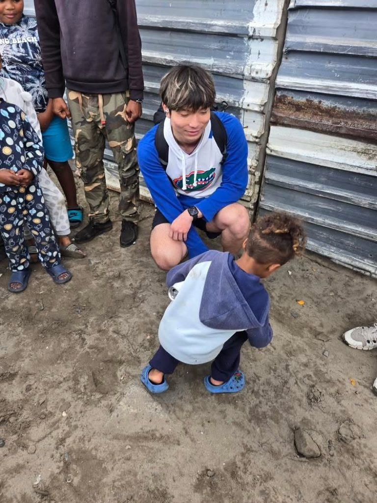

Experiences
During my internship in Cape Town, South Africa, I collaborated with local housing organizations and spent time in various townships. These visits were both heartwarming and eye-opening. I saw children full of joy and potential, yet I couldn't help but reflect on the harsh reality that many may face limited options in the future—sometimes being pushed toward gang involvement due to poverty and lack of support. This experience left a lasting emotional impact and reinforced my commitment to leveraging technology and data to empower under-resourced communities. I believe innovation should serve the people most in need.
